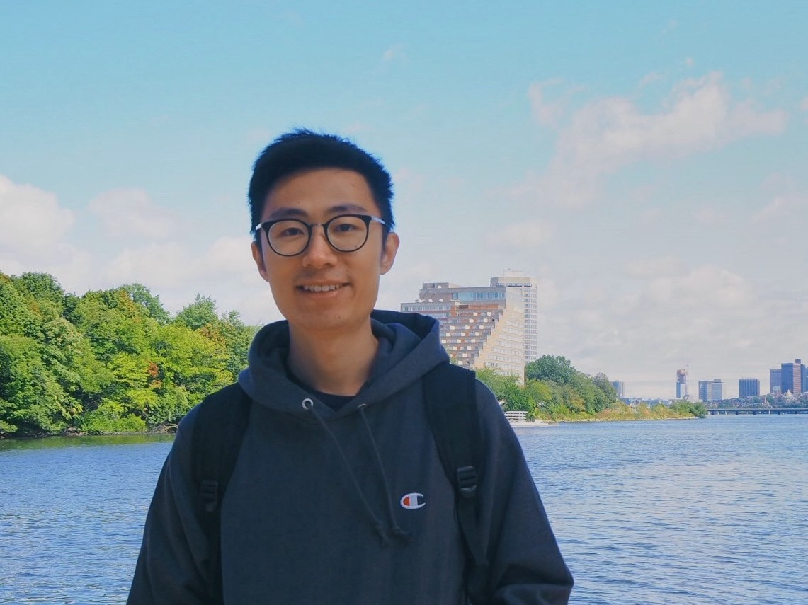

Juezhao Yu
Personal Email: yujuezhao[at]outlook[dot]com |
 |
I am a PhD student in the Department of Electrical and Computer Engineering (ECE) at the National University of Singapore (NUS), supervised by Dr. Tham Chen Khong. I received my MSc in Electrical Engineering (EE) from NUS and my BEng in EE from the Beijing University of Posts and Telecommunications (BUPT). Before starting my PhD, I worked with Dr. Jiantao Pu at the University of Pittsburgh on deep learning and medical image analysis. My academic journey has been driven by a strong interest in building intelligent, reliable, and scalable AI systems.
I study the security, scalability, and robustness of modern ML/AI systems—including reinforcement learning, multi-agent systems, and large language models. I am particularly interested in how these technologies operate in decentralized environments such as federated and IoT-based systems, and how we can design them to be trustworthy and resilient in real-world settings.